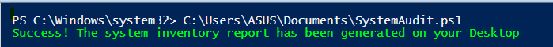
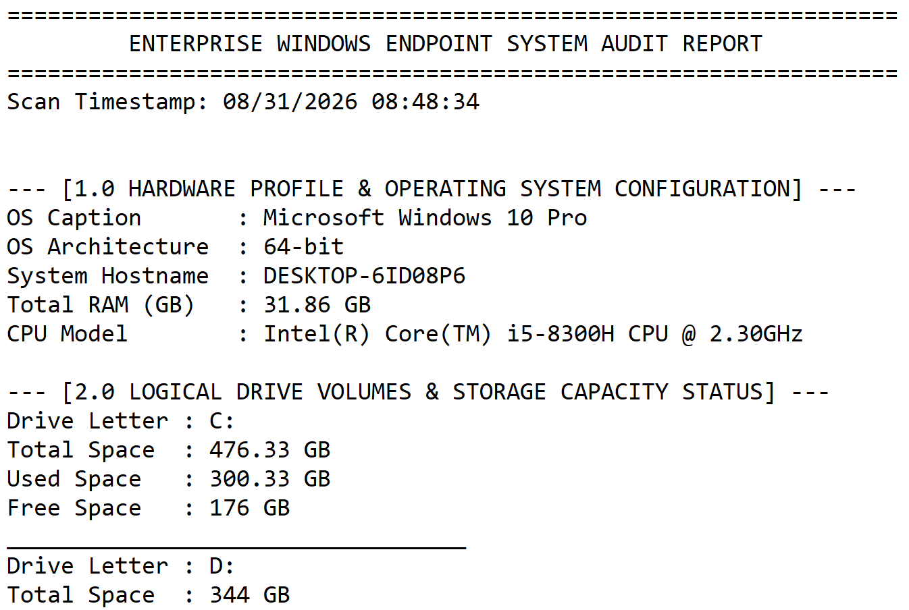

Manual endpoint inventory does not scale. In an organization with fifty workstations, the process of physically checking each machine's CPU model, RAM size, disk capacity, and installed applications produces stale data before the audit is even complete — and on a fleet of hundreds, it's an impossibility. Enterprise IT departments solve this with automation, and on Windows the standard toolkit for the job is PowerShell talking to the kernel through the Common Information Model.
This engagement builds and executes a standalone script —
SystemAudit.ps1 — that performs complete hardware, storage, and software
inventory on a single endpoint and produces a timestamped report on the Desktop. The
interesting engineering isn't the discovery itself; it's the handling of the unexpected
failure mode the script encounters during registry crawling, and how a proper isolation
layer keeps the report intact even when one of its data sources is corrupt.
The script was executed against a single Windows 10 endpoint in a lab environment. It requires no external modules, no administrative elevation for the read-only inventory operations shown here, and no network access — all discovery is performed locally against the endpoint's own kernel management interfaces. The report output contains only that endpoint's own hardware and software specifications.
Headless Endpoint Discovery via CIM
The first phase collects the endpoint's static hardware identity — the specs that
rarely change and that define what the machine is. Modern PowerShell targets
the Common Information Model interface rather than the older Windows
Management Instrumentation layer, even though both ultimately surface the same
underlying data. CIM is the DMTF standard that WMI implements; PowerShell's
Get-CimInstance cmdlet talks to it directly, avoiding the COM
marshalling and object-casting overhead that the legacy Get-WmiObject
command carries.
# Query the operating system and CPU identity directly from the kernel layer
$os = Get-CimInstance -ClassName Win32_OperatingSystem
$cpu = Get-CimInstance -ClassName Win32_Processor
$cs = Get-CimInstance -ClassName Win32_ComputerSystem
# Extract the values used by the report
$osCaption = $os.Caption # e.g. "Microsoft Windows 10 Pro"
$osArch = $os.OSArchitecture # e.g. "64-bit"
$hostname = $cs.Name # endpoint hostname
$totalRamGB = [math]::Round($cs.TotalPhysicalMemory / 1GB, 2)
$cpuModel = $cpu.Name # e.g. "Intel(R) Core(TM) i5-8300H..."
Three CIM classes do the work here. Win32_OperatingSystem provides the OS
caption and architecture — the values that identify which Windows SKU is installed and
whether it's a 32-bit or 64-bit build. Win32_Processor provides the CPU
model string, read directly from the processor's own identification registers through
the kernel. Win32_ComputerSystem provides the hostname and total physical
memory, exposed as a raw byte count that the script converts to a human-readable
gigabyte value.
That last conversion is worth noting because it's the kind of detail that separates a
script that works from a script that produces correct output. TotalPhysicalMemory
returns bytes as a 64-bit integer — for a machine with 32 GB of RAM that's a number in
the tens of billions. Dividing by 1GB (PowerShell's automatic byte-scale
shorthand for 1073741824) produces a decimal value, and rounding to two
places yields the number that appears in the report: 31.86 GB. The
small deficit against the nominal 32 GB is not a bug — it's the amount of memory the
kernel reserves for hardware mappings before the operating system even loads, and it's
the reason a "32 GB" machine never reports exactly 32.
Storage Calculation Engine
The second phase enumerates every mounted local volume and calculates its capacity
utilization. The discovery is done by querying
Win32_LogicalDisk with a filter on the DriveType property —
and that filter is doing meaningful work.
Windows assigns a numeric type code to every logical device it mounts. Type
3 is the code for a local fixed disk — the physical storage
built into the machine. Other codes cover network shares (4), optical media (5), and
removable drives (2). Filtering to DriveType = 3 ensures the report
describes only the machine's own storage and doesn't accidentally include a mapped
network drive or a USB stick that happened to be plugged in when the script ran. An
inventory report that claims an endpoint has 4 TB of storage because someone left a
backup drive connected is worse than useless — it's misleading.
# Target only locally-attached fixed disks (DriveType 3)
$drives = Get-CimInstance -ClassName Win32_LogicalDisk -Filter "DriveType = 3"
foreach ($drive in $drives) {
$totalGB = [math]::Round($drive.Size / 1GB, 2)
$freeGB = [math]::Round($drive.FreeSpace / 1GB, 2)
$usedGB = [math]::Round($totalGB - $freeGB, 2)
# Emit a formatted block for the report
"Drive Letter : $($drive.DeviceID)"
"Total Space : $totalGB GB"
"Used Space : $usedGB GB"
"Free Space : $freeGB GB"
""
}Each volume produces four computed values: total capacity, free space, used space, and — implicitly — the utilization ratio. The used value is derived by subtraction rather than read from the disk, because CIM exposes only total and free; the operating system does not maintain a separate "used" counter. Deriving it in the script means the two values that are authoritative (total and free) remain the source of truth, and the derived value can never drift out of sync with them.
Every byte count is converted through [math]::Round(x / 1GB, 2) before it
reaches the report. The two-decimal precision is deliberate: raw bytes are useless to a
human reader, and unrounded gigabytes produce fifteen decimal places of noise. The
report renders the same clean values a person would write down if they were checking
the disk manually.
Crash-Proof Registry Crawling
The third phase is the most consequential one, because it's where the script
encountered a real-world failure that would have crashed a naive implementation. The
goal of this phase is to enumerate every installed application on the endpoint —
which Windows tracks in the registry under Uninstall keys, but across
two separate locations depending on the bitness of the application.
Why two registry paths are required
On 64-bit Windows, the registry is split into two logical views. Native 64-bit
applications register their uninstall metadata under the standard path at
HKLM:\SOFTWARE\Microsoft\Windows\CurrentVersion\Uninstall. But 32-bit
applications — including most legacy line-of-business software — register under
HKLM:\SOFTWARE\Wow6432Node\Microsoft\Windows\CurrentVersion\Uninstall,
a redirected mirror path that exists to preserve backward compatibility. A script
that crawls only one of these paths will silently miss half the installed software on
the machine.
The script handles this by iterating over both paths, collecting application entries from each, and merging the results into a single sorted inventory. The output is therefore a complete picture of the endpoint's software — not just the subset that happens to be 64-bit native.
The failure that almost broke the report
During development, execution on the target endpoint terminated with an
InvalidCastException — the specific error message being
"Specified cast is not valid." This is a .NET runtime error, and on the
surface it looks unrelated to registry crawling. But the cause is directly tied to how
Windows stores application metadata.
Every property under an Uninstall key — DisplayName,
DisplayVersion, Publisher, and others — is stored with a
declared data type. Occasionally, an application installer writes one of these values
with a type that PowerShell's property accessor cannot automatically coerce. A value
registered as REG_MULTI_SZ (a multi-line string array) being read into a
property the script expects to be a single string, for example, produces exactly this
error. The corrupted key isn't dangerous — it's just non-conforming — but a script
that reads the registry without protection will die on it, taking the entire report
down with it.
The isolation layer
The remediation was structural: each registry path was wrapped in its own
try/catch block, so that a failure while reading one path cannot
propagate to the others or abort the script entirely.
# Both registry paths — 64-bit native and 32-bit Wow6432Node redirect
$registryPaths = @(
'HKLM:\SOFTWARE\Microsoft\Windows\CurrentVersion\Uninstall\*',
'HKLM:\SOFTWARE\Wow6432Node\Microsoft\Windows\CurrentVersion\Uninstall\*'
)
$installedApps = foreach ($path in $registryPaths) {
try {
Get-ItemProperty -Path $path -ErrorAction Stop |
Where-Object { $_.DisplayName } |
Select-Object DisplayName, DisplayVersion, Publisher
}
catch [System.InvalidCastException] {
# Log the corrupt node and continue with the next path
Write-Warning "Skipped unreadable registry entry under: $path"
}
}
# Sort the merged inventory for readable output
$installedApps | Sort-Object DisplayName
Two design choices in that block matter. First, -ErrorAction Stop forces
PowerShell to treat the failure as a terminating error, which is what allows the
try/catch to trap it — by default, PowerShell would emit a non-terminating
error and continue past the broken entry, but the surrounding catch block would never
fire. Second, the catch clause is typed to
[System.InvalidCastException] specifically, rather than catching all
exceptions indiscriminately. This is important discipline: an untyped
catch { } would suppress every error the registry read could
throw, including errors that indicate a real problem (permission issues, drive
failures, etc.). Typing the catch to the specific exception class it expects to see
means unexpected failures still surface, while the known-benign corrupted-key case is
handled cleanly.
The Where-Object { $_.DisplayName } clause is a smaller detail with a
larger purpose: some Uninstall registry keys exist as containers without actually
describing an application, and they lack a DisplayName value. Filtering
those out prevents blank rows and placeholder entries from polluting the software
inventory, keeping the report focused on real installed software.
Execution & Output Verification
The script was executed from a standard PowerShell prompt on the target endpoint. Two verification captures confirm the full cycle — first that the script completed successfully, then that the report it produced is complete and correctly formatted.
Execution confirmation
The script was invoked by its full path from the system directory, and PowerShell returned a clean exit with a single explicit success message written to the console. This confirms the script ran end-to-end without a terminating error — including the registry crawl phase where the InvalidCastException would have aborted execution without the isolation layer:

system32 and completed with the explicit success message
"Success! The system inventory report has been generated on your Desktop."
The clean termination confirms that the try/catch isolation layer successfully
trapped the registry exception encountered during the software inventory phase,
allowing the script to finish without dropping data or aborting prematurely.
Timestamped corporate manifest
The report generated by the script is a plaintext manifest containing three fully populated sections — hardware profile, logical drive volumes, and the sorted software inventory — prefixed by an automatic timestamp recording exactly when the scan was executed:

08/31/2026 08:48:34) automatically at runtime. Section 1.0
Hardware Profile reports OS caption (Windows 10 Pro), architecture
(64-bit), hostname, total RAM (31.86 GB — correctly converted from raw
bytes to gigabytes with the reserved kernel memory accounted for), and CPU model
string. Section 2.0 Logical Drive Volumes reports the C: and D:
drives with their total, used, and free space values computed from the byte-to-GB
conversion engine.
- Clean termination confirmed. The script completed end-to-end with an explicit success message, proving that all three phases — hardware discovery, storage calculation, and software registry crawl — executed without a terminating error. The try/catch isolation layer served its purpose: an exception that would have aborted a naive implementation was trapped, logged, and bypassed, and the report was generated in full.
-
Report contents verified against expected values. The hardware
profile reports the CPU model (
Intel(R) Core(TM) i5-8300H CPU @ 2.30GHz), the OS caption (Microsoft Windows 10 Pro), the architecture (64-bit), and the RAM total (31.86 GB) — all read directly from the CIM interface. Section 2.0 renders the drive volumes with correctly computed space metrics. Every value in the report reflects a live query rather than a hardcoded placeholder. -
Automatic timestamping proven at runtime. The
Scan Timestampfield was generated by the script itself, not written into the report template. This means every execution produces a uniquely identifiable manifest — a property that matters for fleet-scale deployments, where hundreds of endpoints might be audited within a single hour and each report needs to be independently traceable to its scan window.
Full endpoint inventory automation confirmed operational. A single command produces a complete, timestamped, structured report covering hardware, storage, and software across both 64-bit and 32-bit application registry paths — with a built-in fault-isolation layer that preserves report integrity in the presence of corrupted registry keys. The script is a working template for fleet-scale deployment: point it at a list of endpoints, collect the reports, and the organization has a current, accurate, and identical-format inventory of its entire Windows environment.
Security & Data Privacy Note
The script was executed against a single lab-owned Windows 10 endpoint. The hostname
shown in the report (DESKTOP-6ID08P6) is a Windows default
machine-generated identifier assigned automatically during initial OS provisioning —
it carries no organizational or personal information and identifies a lab machine
only. Hardware specifications (CPU model, RAM size, disk capacity) are generic
consumer component identities and do not identify any individual or organization.
No production system, user data, or application-level credential appears in the
report output.